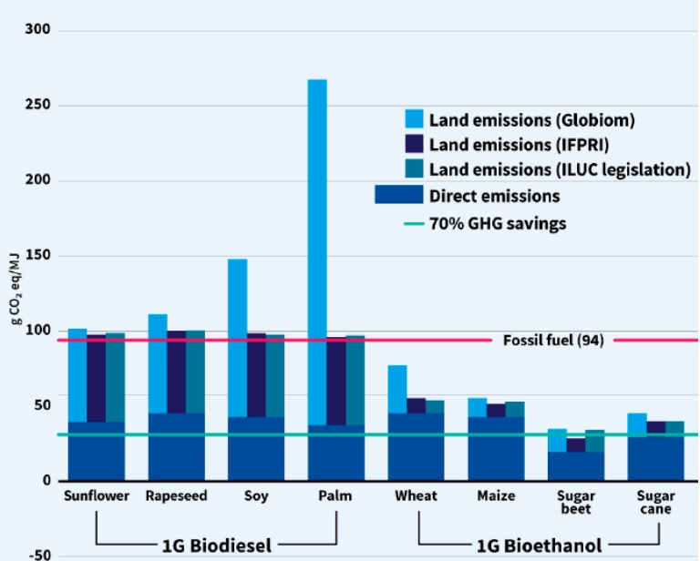

Sabías qué...
No todos los biocombustibles son sostenibles
¿Sabías que en Brasil casi todos los coches funcionan con alcohol de caña de azúcar? Si, efectivamente, el alcohol puede usarse como combustible. Puede que hayas escuchado hablar de biocombustibles, pero ¿qué son realmente? ¿Por qué existe interés en ellos? Y sobre todo ¿Cómo podemos producirlos?
Se denomina biocombustible a todo material sólido, líquido o gaseoso procedente de seres vivos o material orgánico que pueda ser utilizado como una fuente de energía alternativa a los actuales combustibles fósiles. Es por esto que resultan interesantes, ya que al obtenerse de seres vivos, directa o indirectamente, suponen una fuente renovable de combustible.
La idea de los “biocombustibles” no es nueva.De hecho, la humanidad ya utilizaba la madera, la cera de abeja o las grasa de ballena mucho antes de descubrir el petróleo, el gas o el carbón. Sin embargo, en la actualidad están recobrando importancia por su potencial renovable y de cero emisiones, en contraposición con los actuales combustibles fósiles.
En el caso de los combustibles fósiles como el petróleo o la gasolina, cuando los quemamos en los motores expulsamos dióxido de carbono (CO2) como desecho. Ese carbono pasa entonces de estar en forma “combustible”, procedente de materia orgánica ancestral enterrada en el suelo, a estar en forma inorgánica en la atmósfera. El uso continuado de este tipo de combustibles desde la revolución industrial ha hecho que gran parte de ese carbono que estaba “dormido” en el suelo, esté ahora en el aire. Es decir, el se introduce en el aire cada vez más carbono del que antes había, dando lugar al efecto invernadero y con él al cambio climático.
Sin embargo, en el caso de los biocombustibles, cuando los quemamos el dióxido de carbono que emitimos “vuelve” a la atmósfera, porque ese carbono ha tenido que ser previamente obtenido del aire por algún organismo fotosintético como plantas o algunas bacterias. La madera, por ejemplo, la crean los árboles al hacer la fotosíntesis, que no es más que generar materia orgánica a partir de agua, luz y dióxido de carbono que cogen del aire. En el caso del aceite de ballena el proceso es más complejo, pero se basa en lo mismo: microorganismos fotosintéticos marinos (fitoplancton) generan materia orgánica a partir de luz, agua y dióxido de carbono de la atmósfera, moluscos como el krill se alimentan de estos microorganismos, crecen y se reproducen, y luego las ballenas se comen el krill.
En este caso, el carbono fijado inicialmente por el fitoplancton pasa por toda la cadena trófica hasta llegar a la ballena. Si luego nosotros usamos el aceite de ballena como biocombustible, devolvemos el carbono a la atmósfera al quemarlo. Es un ciclo cerrado, no hay acumulación de CO2 en el aire.Es por ello que mientras que quemando combustibles fósiles incrementamos cada vez más los niveles de dióxido de carbono en nuestra atmósfera, al utilizar biocombustibles la cantidad de carbono en la atmósfera se mantiene constante.
El reto de los biocombustibles....
Entonces... ¿Por qué no fabricamos ya nuestra propia gasolina en casa? Sabemos que los biocombustibles provienen de fuentes biológicas y renovables, pero ¿son sostenibles?
Todo biocombustible debe obtenerse mediante un procedimiento de transformación de un recurso natural renovable. Y es aquí donde se encuentra el truco, muchos de los recursos que se utilizan para fabricar biocombustibles compiten directamente con la alimentación u otros usos. ¿Te acuerdas de cuando hablamos del aceite de palma y su utilización para fabricar biodiesel? Imagina un cultivo de palma del tamaño de un campo de fútbol. El biodiesel obtenido serviría solo para dar energía a dos coches durante un año entero. Sin embargo, esa mismo extensión de cultivo de palma podría alimentar a muchas personas o para vivir. La competición de usos del suelo es uno de los problemas a los que se enfrentan la mayoría de los biocombustibles.
Los biocombustibles que proceden directamente de cultivos alimentarios, como el aceite de palma, se consideran de primera generación. Para intentar solventar la competición de usos del suelo, se desarrollaron los biocombustibles de segunda generación, que son aquellos que provienen de restos de cultivos o material vegetal no alimentario, como podas, paja, aguas residuales o aceite usado entre otros.
Sin embargo, a pesar de su gran potencial, estos biocombustibles siguen dependiendo de cultivos u otras actividades. Ante esto, surgen los biocombustibles de tercera generación, basados en microalgas. Estos microorganismos son capaces de crecer con gran rapidez, realizando la fotosíntesis de forma más eficiente que las plantas, pueden además ser cultivadas en la superficie de mares y lagos, evitando la utilización de tierra cultivable. Mientras una hectárea de un cultivo de maíz puede producir cerca de 3500 litros de etanol , la misma superficie cultivada con microalgas llegaría a producir hasta 25.000 litros, casi 10 veces más. Además, estos organismos son capaces de crecer en aguas residuales contaminadas con un exceso de nutrientes, permitiendo incluso depurar el agua al mismo tiempo que se realiza el cultivo.
Aunque estas opciones son teóricamente muy atractivas, incluso los biocombustibles más avanzados presentan algunos problemas. El bioetanol, por ejemplo, solo ofrece un 60% de la energía de la gasolina. Con diez litros de gasolina se pueden recorrer 130 km, mientras que con un litro de bioetanol llegarías a poco menos de 80 km. Una situación parecida sucede entre el biogás y el gas natural. El biodiesel presenta un 90% de la densidad energética del diesel normal, sin embargo puede llegar a solidificarse cuando hace frío, obstruyendo el motor e impidiendo arrancar. Por otra parte, para muchos otros “nuevos biocombustibles” aún no se ha desarrollado la suficiente tecnología como para producirlos de forma eficiente, sostenible y rentable económicamente.
Además, debe considerar un aspecto clave: la eficiencia global del proceso. Esto significa que: la cantidad de energía almacenada en el biocombustible no puede superar el coste energético de su proceso de obtención. Si para generar un litro de biocombustible tenemos que emplear suelo, abonos, pesticidas, agua y energía; y luego además procesar industrialmente el cultivo generando emisiones y un impacto ambiental. No es raro que hayamos gastado más energía en el total del proceso que la que el biocombustible puede ofrecernos. En estas situaciones, quizás aquí, casi es preferible usar un combustible fósil.
Un litro de diésel general alrededor de 2,6 kg de CO2 en nuestro motor, y contando con que su obtención, procesado y transporte generan cerca de un 30% de CO2 adicional (aproximadamente 0,4 kg extra) podemos decir que en total genera 3 kg de CO2. El biocombustible también genera CO2 al quemarse, pero lo contamos como cero porque en realidad devolvemos ese CO2 como hemos explicado antes. Así, si la obtención de un biocombustible, procesarlo y transportarlo genera menos de 3 kg de CO2, utilizarlo tiene sentido. Sin embargo, esto no sucede siempre, no siendo extraño encontrar casos como el biodiesel de palma, el cual llega a emitir hasta 3 veces más CO2 que el diesel convencional. Si bien depende mucho de la materia prima, el proceso de recolección, producción y utilización del biocombsutible
A modo de ejemplo, en Europa, convertimos más de 4 millones de toneladas anuales de aceite de palma para la fabricación de biodiesel, siendo el principal biocombustible utilizado en nuestro continente, Esto se debe en parte a la existencia de políticas que incentivan la utilización de biocombustibles, donde como hemos visto no siempre acaban obteniendo el resultado esperado. Si bien es necesario incentivar la utilización de biocombustibles, al ser una posibilidad real de movernos de forma sostenible, debemos también ser conscientes de cuál es su origen y cómo pueden producirse del modo menos contaminante posible. Solo entonces serán verdaderamente sostenibles.
Esto no es nada que deba extrañarnos, la industria del petróleo lleva casi un siglo de investigación y desarrollo tecnológico. Durante este período, la eficacia, rentabilidad y sostenibilidad de las formas de refinar el crudo es lo que ha permitido que a día de hoy sigamos usando gasolina o diesel para movernos. En el caso de los biocombustibles… esta investigación es prácticamente inexistente, y solo ahora estamos comenzando a explorar todas las opciones.
Por ello actualmente se trabaja para generar biocombustibles de manera más eficiente, barata, y que tengan unos costes de obtención, procesado y transporte inferiores a los de los combustibles fósiles.
Todas estas circunstancias han llevado a los científicos a seguir buscando nuevas alternativas. Los biocombustibles avanzados o biocombustibles de 4ª generación buscan dar una solución a estos problemas. Esta generación de biocombustibles recurre a tecnologías como la ingeniería metabólica, la biología sintética o los nuevos materiales. Es aquí donde se enmarca el proyecto 4C_Fuels.
Sin embargo, seguro que a muchos todavía os surge una pregunta… ¿Y los coches eléctricos? ¿No se supone que son el futuro? ¿Dónde quedan los biocombustibles entonces? Es un tema muy interesante, pero lo dejamos para el próximo “Sabías qué”, ¡no te lo pierdas!
¿Quieres saber más?
Si después de leer el artículo todavía quieres saber un poco más sobre la forma en la que se pueden obtener biocombustibles o las distintas generaciones de tecnologías existentes, a continuación puede encontrar más información. Haz click en el desplegable para
-
¡Quiero Saber Más!
Biocombustibles de 1ª Generación.
La primera generación de biocombustibles. Incluyen el etanol y el biodiesel que se obtienen fundamentalmente a partir de cultivos alimentarios. El etanol es el alcohol del vino o la cerveza, se obtiene fácilmente por fermentación de los hidratos de carbono de los alimentos, mientras que el biodiesel se obtiene al tratar químicamente aceites o grasas en un proceso llamado transesterificación.
Las tecnologías de producción son sencillas y se encuentran muy desarrolladas, donde la práctica totalidad de biocombustibles que utilizamos pertenecen a esta categoría.
Entre sus numerosos inconvenientes se encuentra el hecho de que compiten con la alimentación humana y que precisan de enormes extensiones de terreno para su cultivo. Sin embargo, son los biocombustibles más desarrollados e investigados, siendo por ello también los más utilizados en la actualidad. Dependiendo del tipo de cultivo utilizado, prácticas agrícolas, tecnología disposnible y condiciones climáticas estos biocombustibles pueden presentar desde un impacto medioambiental menor a los combustibles fósiles, hasta uno significativamente mayor.
En la actualidad más del 40% del aceite vegetal consumido en Europa se destina a fabricar biodiesel, debido a las obligaciones legales de utilización biocombustibles. No solo esto, sino que las malas prácticas agrícolas en las regiones de cultivo, hacen que considerando todas las etapas desde la siembra de las plantas hasta la combustión del biocombustible, las emisiones de gases de efecto invernadero resultan hasta tres veces mayores que utilizando combustibles fósiles convencionales. ¡Un desastre!
Biocombustibles de 2ª Generación.
La segunda generación de biocombustibles apuesta por obtener biocombustibles a partir de residuos o material vegetal no alimentario. Es fácil extraer aceite de una planta o fermentar cereales para conseguir alcohol, pero ¿Has pensado alguna vez en convertir un árbol entero en alcohol?. No es casualidad que los animales prefiramos comer mazorcas de maíz a los tallos y hay una razón para ello: tienen más energía y son más fáciles de “digerir”.
En los biocombustibles de segunda generación se buscan aprovechar como materia prima los residuos (paja, restos de poda, aguas residuales, aceite usado…) Además del bioetanol y el biodiesel, también se suman el biogás y el (bio)hidrógeno: biocombustibles gaseosos que se obtienen por fermentación de residuos orgánicos.
Así, esta generación de biocombustibles busca aprovechar las “sobras” de aquellas prácticas que ya realizamos. Sin embargo, estos “residuos” deben someterse a múltiples tratamientos previos que permitan “digerirlos” y convertirse en biocombustibles. Cada una de estas etapas requiere de tecnologías e infraestructura complejas, consumiendo además energía y generando emisiones adicionales. Si bien la segunda generación de biocombustibles si tiene una oportunidad para ofrecer una alternativa sostenible, la tecnología es mucho más costosa y aún se encuentra en fase de desarrollo. Además sigue dependiendo en última instancia del cultivo de plantas, necesitando terrenos donde ser cultivadas, con los problemas que esto puede suponer.
Biocombustibles de 3ª Generación.
La tercera generación de biocombustibles Si bien las tecnologías y biocombustibles son similares a las anteriores generaciones, la clave está en el material de partida: las microalgas. Un biocombustible de tercera generación se obtiene a partir del cultivo de microalgas o cianobacterias, tras cosecharlas pueden extraerse sus grasas para producir biodiesel o fermentar los carbohidratos que producen para conseguir bioetanol u otros biocombustibles.
Estos microorganismos son capaces de crecer con gran rapidez, realizando la fotosíntesis de forma más eficiente que las plantas, pueden además ser cultivadas en la superficie de mares y lagos, evitando la utilización de tierra cultivable. Mientras una hectárea de un cultivo de maíz puede producir cerca de 3500 litros de etanol , la misma superficie cultivada con microalgas llegaría a producir hasta 25.000 litros ¡Casi 10 veces más! Además, estos organismos son capaces de crecer en aguas residuales contaminadas con un exceso de nutrientes, permitiendo incluso depurar el agua al mismo tiempo que se realiza el cultivo. Por si fuera poco, existe una gran variedad de estos microorganismos, donde algunos son incluso capaces de crecer utilizando los gases de combustión de la industria.
¿Hay truco? Como en casos anteriores la realidad es muy variable, si bien la tecnología encierra un gran potencial, dependiendo de las condiciones ambientales de cada región, las especies cultivadas y las tecnologías utilizadas, los biocombustibles de tercera generación pueden llegar a ser entre menos de la mitad y cuatro veces más contaminantes que los combustibles fósiles tradicionales.
El futuro de los biocombustibles...
Hasta el momento, los biocombustibles siempre se han obtenido a partir de la transformación de la materia orgánica a través de numerosas etapas, desde la fijación del dióxido de carbono de la atmósfera hasta la cosecha de la materia orgánica y su transformación. Esta gran variedad de procesos sucesivos es la principal limitación a la sostenibilidad de los biocombustibles, donde el “cómo se hace” cada paso importa.
Además, los principales biocombustibles presentan otras limitaciones, como las que hemos mencionado al comienzo del artículo. Los problemas de corrosión, dificultades para arrancar el vehículo en determinadas condiciones, necesidad de adaptar los motores utilizados o una menor autonomía son algunas de ellas
Todas estas circunstancias han llevado a los científicos a seguir buscando nuevas alternativas. Las biocombustibles avanzadas o biocombustibles de 4ª generación buscan dar una solución a estos problemas.
La cuarta generación de biocombustibles…. Apuesta por redefinir tanto los biocombustibles utilizados como los procesos de obtención, llegando a la situación donde es el propio microorganismos quien produce el biocombustible de interés, simplificando los procedimientos actuales y mejorando las propiedades del producto. El objetivo es reducir la complejidad y el número de etapas desde la captación del dióxido de carbono por los organismos hasta su transformación en un biocombustible Además se busca obtener biocombustibles con características específicas como una alta densidad energética, o menores emisiones, mejorando las prestaciones de los combustibles convencionales. Para ello, la cuarta generación recurre a tecnologías como la ingeniería metabólica, la biología
sintética o los nuevos materiales.Existe un elevado número de posibles biocombustibles avanzados, el butanol, las metil-cetonas o los terpenos son algunos ejemplos de ello. Donde, se da la casualidad que la mayoría de estos compuestos presentan olores agradables, habitualmente relacionados con plantas o frutas… ¿Te imaginas llenar un bidón de “gasolina” que huele a plátano y rosas?
Aunque por el momento estas tecnologías aún se encuentran en pleno desarrollo, desde 4C_Fuels no tenemos ninguna duda en que en el futuro se escuchará hablar mucho más de todas ellas.
-
Referencias
[1] https://www.greencarreports.com/news/1092180_driving-entirely-on-ethanol-brazils-volkswagen-gol-flex-fuel-vehicle
[2] https://www.transportenvironment.org/what-we-do/biofuels/10-facts
[3] https://www.idae.es/tecnologias/energias-renovables/uso-termico/biocarburantes/marco-normativo-del-sector-de [4] dx.doi.org/10.1002/9781119460381.ch16
[5] https://innovationorigins.com/en/producing-gasoline-and-diesel-emits-more-co2-than-we-thought/
[6] https://www.transportenvironment.org/what-we-do/biofuels/why-palm-oil-biodiesel-bad
[7] https://people.exeter.ac.uk/TWDavies/energy_conversion/Calculation%20of%20CO2%20emissions%20from%20fuels.htm
[8] https://www.eea.europa.eu/data-and-maps/indicators/greenhouse-gas-emissions-intensity-of/assessment
[9] dx.doi.org/10.1166/jbmb.2008.402